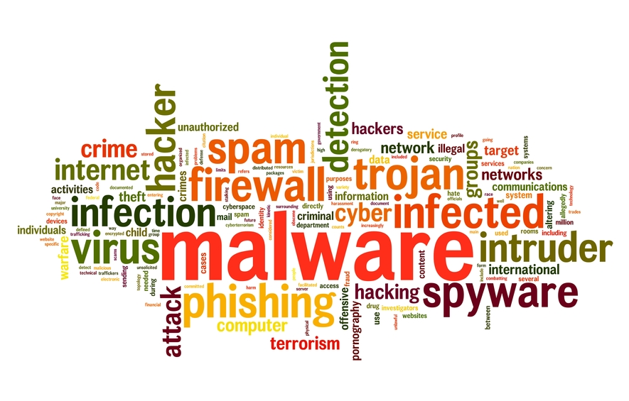

I malware sono dei programmi software, nati con lo scopo scopo di causare danni a un computer,
ai dati degli utenti del
computer, o a un sistema informatico su cui viene eseguito.
La diffusione di tali software risulta in continuo aumento sono destinati ad aumentare con
l'espansione della Rete e il progressivo diffondere della cultura informatica. Si distinguono molte categorie di malware,
anche se spesso questi programmi sono composti di piu' parti interdipendenti e rientrano pertanto in piu' di una classe.
Vista inoltre la rapida evoluzione in questo campo, la classificazione presentata di seguito non e' da ritenersi esaustiva.

I Virus sono parti di codice che si diffondono copiandosi all'interno di altri programmi, o in una particolare sezione del disco fisso, in modo da essere eseguiti ogni volta che il file infetto viene aperto. Si trasmettono da un computer a un altro tramite lo spostamento di file infetti ad opera degli utenti.
I Trojan Horse sono dei software che contengono istruzioni dannose che vengono eseguite all'insaputa dell'utilizzatore. Non possiedono funzioni di auto-replicazione, quindi per diffondersi devono essere consapevolmente inviati alla vittima. Il nome deriva dal famoso cavallo di Troia.
I Worm sono malware che non hanno bisogno di infettare altri file per diffondersi, perche' modificano il sistema operativo della macchina ospite in modo da essere eseguiti automaticamente e tentare di replicarsi sfruttando per lo più Internet. Sfruttano dei difetti (Bug) di alcuni programmi per diffondersi automaticamente.
Il loro scopo e' rallentare il sistema con operazioni inutili o dannose.
I Keylogger sono dei programmi in grado di registrare tutto cio' che un utente digita su una tastiera o che copia e incolla rendendo così
possibile il furto di password o di dati che potrebbero interessare qualcun altro. La differenza con gli Adware sta nel fatto che il computer non si
accorge della presenza del keylogger e il programma non causa rallentamento del pc, passando cosi' totalmente inosservato.
Generalmente i keylogger vengono installati sul computer dai trojan o dai worm, in altri casi invece il keylogger viene installato sul computer da
un'altra persona che puo' accedere al pc o attraverso l'accesso remoto (che permette a una persona di controllare un altro pc dal suo stesso pc
attraverso un programma) oppure in prima persona, rubando cosi' dati e password dell'utente. Esistono anche i Keylogger Hardware, che possono
essere installati da una persona fisica, e poi, sfruttando la rete Internet inviano informazioni al malintenzionato quali password, email ecc.
I Spyware sono software che vengono usati per raccogliere informazioni dal sistema su cui sono installati e per trasmetterle ad un destinatario interessato. Le informazioni carpite possono andare dalle abitudini di navigazione fino alle password e alle chiavi crittografiche di un utente.
Questi programmi si occupano di gestire la connessione ad Internet tramite la normale linea telefonica. Sono malware quando vengono utilizzati in modo illecito, modificando il numero telefonico chiamato dalla connessione predefinita con uno a tariffazione speciale, allo scopo di trarne illecito profitto all'insaputa dell'utente.
Il Zip Bomb E' un file che si presenta come un file compresso. Deve essere l'utente ad eseguirlo. All'apparenza sembra un innocuo file da pochi Kilobyte ma, appena aperto, si espande fino a diventare un file di circa quattro Petabyte, occupando quindi tutto lo spazio su disco rigido.
Il PhishingE' un tipo di truffa effettuata su Internet attraverso la quale un malintenzionato cerca di ingannare la vittima convincendola a fornire informazioni personali, dati finanziari o codici di accesso.